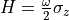

[1]:
from quanguru import QuantumSystem, qSystem, compQSystem, Spin, Qubit, Cavity
from quanguru import QuantumToolbox as qt
Let’s create some quantum systems.
You can use Qubits class to create a qubit, and it won’t require a dimension information and also use  as the default
as the default operator. Alternatively, you can use QuantumSystem class, but, in this case, you need to give at least one of the relevant information (operator, dimension, or frequency) while creating it.
[2]:
Qubit1 = QuantumSystem(operator=qt.sigmaz)
Qubit2 = Qubit(frequency=0.5)
Cavity1 = Cavity(dimension=3)
Spin1 = Spin(jValue=1) # you can either give a dimension or, equivalently, the spin quantum number. The spin object can handle either.
<class 'quanguru.classes.QSys.qSystem'>
You can set any attribute while creating the objects as above, or you can set or change them later as below.
[5]:
Qubit1.frequency = 1
Qubit1.dimension = 2
Qubit2.frequency = 2
now let’s print the Hamiltonian of these qubits.
Notice that their Hamiltonians are equal, even though the Qubit1 has frequency=1 and Qubit2 has frequency=2. The reason is that the Qubit class also assumes the usual 1/2 in Qubit Hamiltonian:
.
while the generic QuantumSystem with operator  and
and frequency  has the Hamiltonian:
has the Hamiltonian:
.
[8]:
Qubit1.totalHam.A, Qubit2.totalHam.A
[8]:
(array([[ 1, 0],
[ 0, -1]]),
array([[ 1., 0.],
[ 0., -1.]]))
[ ]: